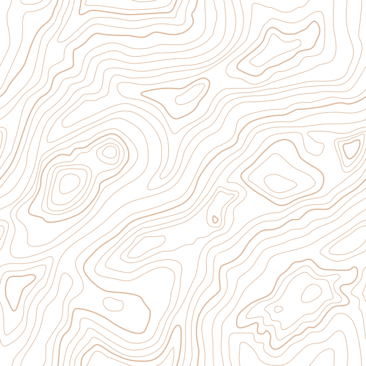
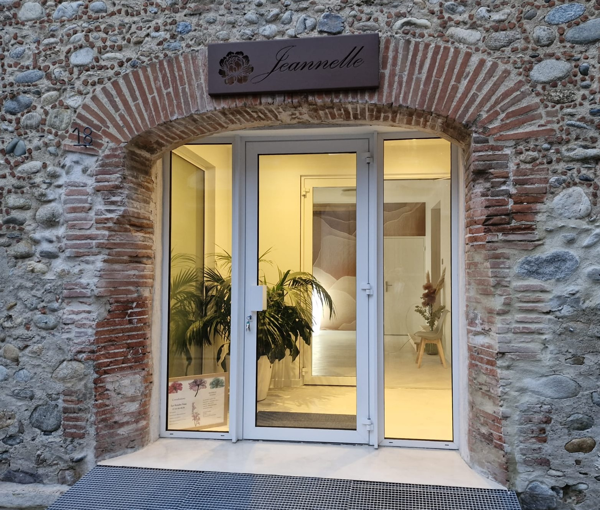
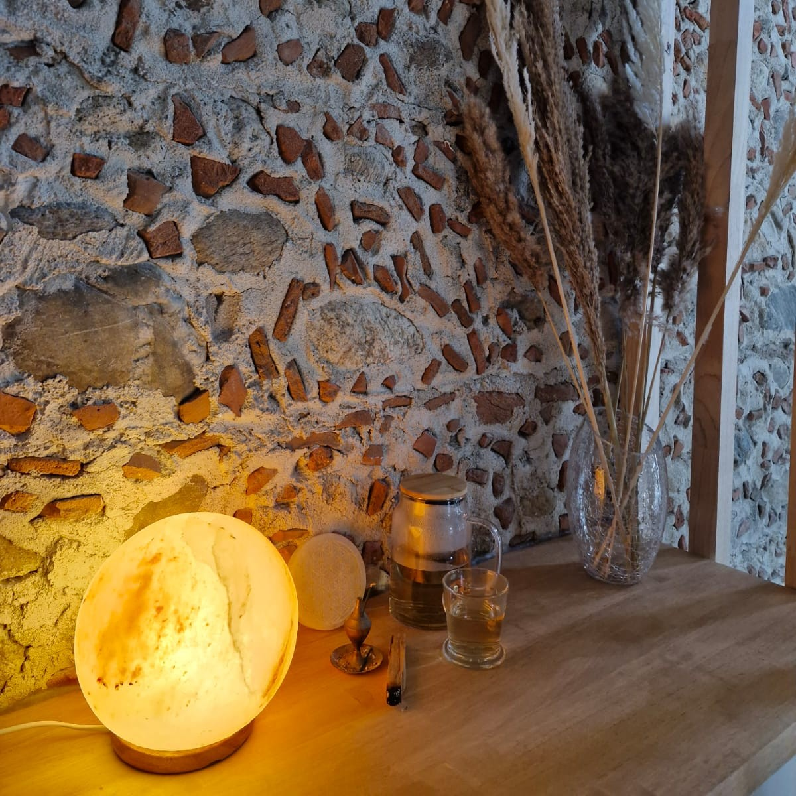
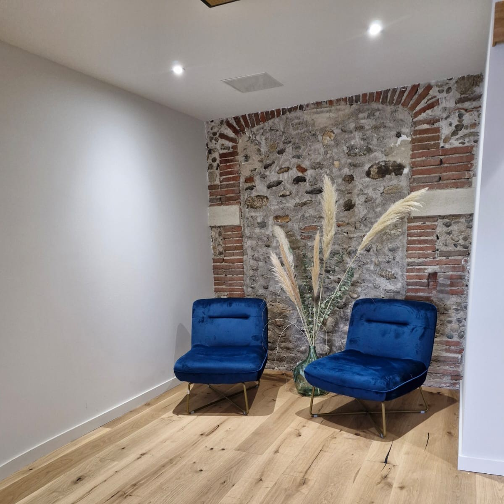
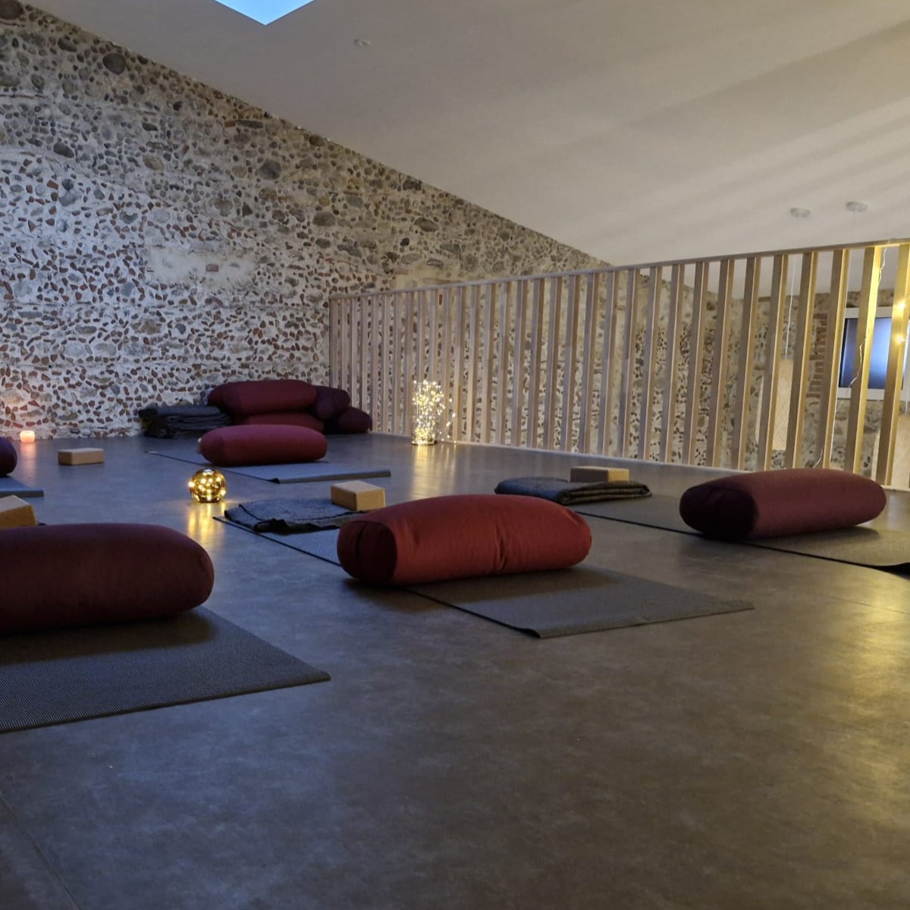
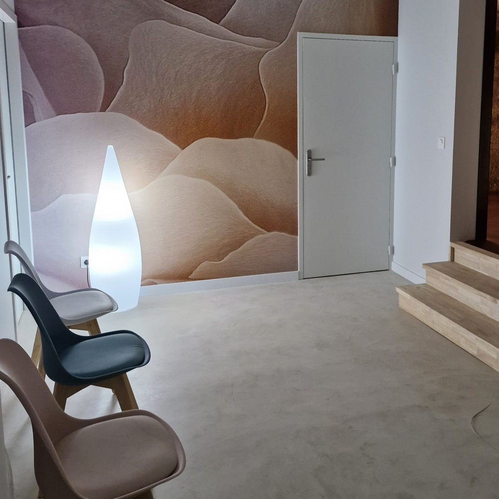
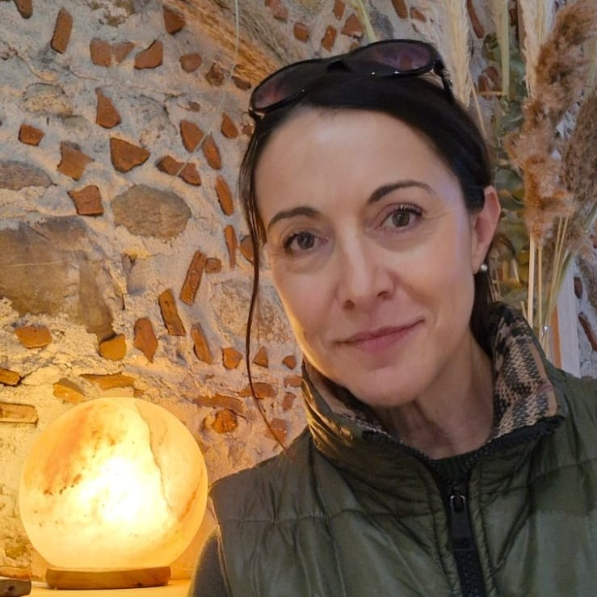

Jeannelle, un centre de thérapeutes...
À votre écoute, au cœur du village de Millas.
Un endroit cosy où l’on peut se poser et être entendu dans ses mots… et ses maux.
Un centre pour vous accompagner.
...Plusieurs thérapies y sont proposées...
...Mais pas seulement

Karine Maraval
07.60.48.48.06
Soyons nombreux à accueillir celles et ceux qui sont en demande. Soyons nombreux pour échanger et partager. Offrez vos pratiques, vos connaissances, votre sensibilité...